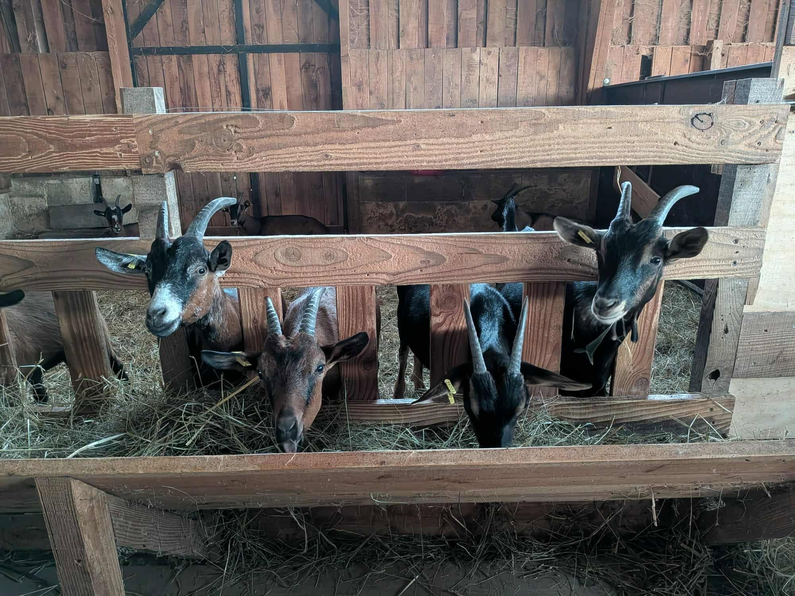

De l'étable à l'affinage 🧀
Notre fromagerie est le lieu où s'exprime tout le savoir-faire de la ferme. Nous y élaborons nos fromages de chèvre et de vache[cite: 1].
Pour notre élevage bovin, environ 20 % de nos 120 000 litres de lait annuels sont valorisés et transformés sur place[cite: 1]. Le travail rigoureux de notre éleveuse-fromagère permet de produire 125 kg de fromages par semaine[cite: 1] !
Un savoir-faire au lait cru 🤲
Pour garantir des produits vivants et riches en goût, nous travaillons exclusivement au lait cru. Voici les grandes étapes de notre fabrication artisanale :
- Le caillage : Ajout de présure et de ferments naturels pour faire coaguler le lait.
- Le moulage : Fait à la main, souvent à la louche, pour respecter la texture du caillé (idéal pour les pâtes molles).
- L'égouttage et le salage : Le sérum s'évacue naturellement, et le salage (au sel sec ou en saumure) forme la croûte.
- L'affinage : Nos fromages reposent en cave sur des planches en bois, où ils sont retournés et brossés régulièrement.
Nos différents types de fromages 🏷️
En maîtrisant différentes techniques, nous proposons une gamme variée qui évolue au fil des saisons :
- Les lactiques (Chèvres frais et affinés) : Une coagulation lente pour des fromages fondants, cendrés ou nature.
- Les pâtes molles à croûte fleurie : Un cœur crémeux sous une belle croûte blanche (type Camembert ou Brie).
- Les pâtes pressées (Tommes) : Le caillé est pressé pour évacuer l'humidité, permettant un affinage long de plusieurs mois pour développer des arômes intenses.


